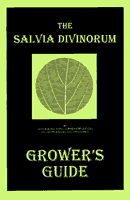

Contents

Support the Authors!
See the site for the 2015 version of this book - SalviaGrowing.com
- This document has been removed by request of the authors. January, 2015.
This booklet is currently out of print and used copies are not practically available.